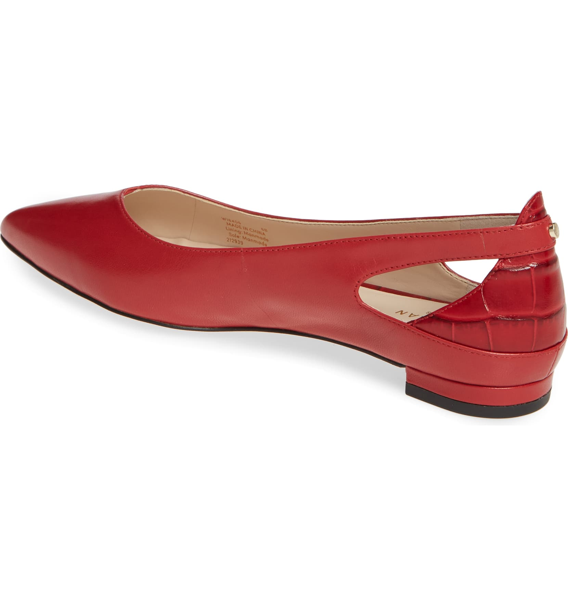
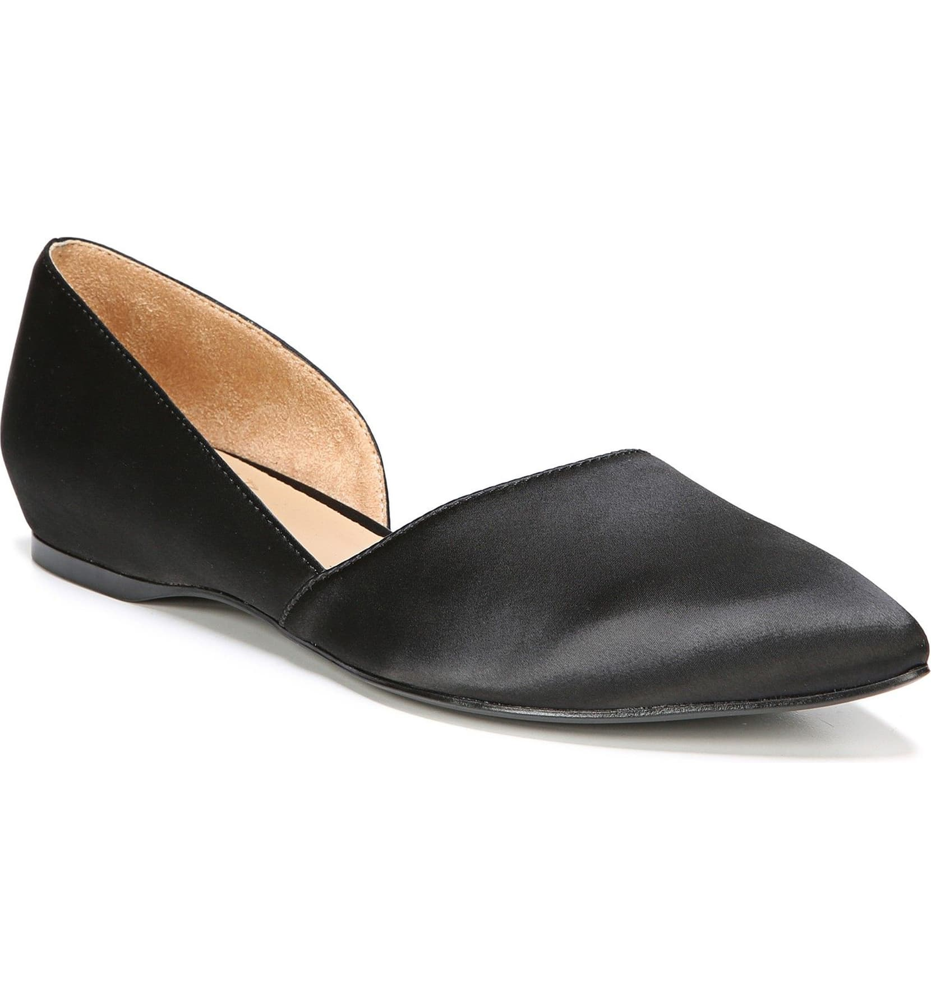
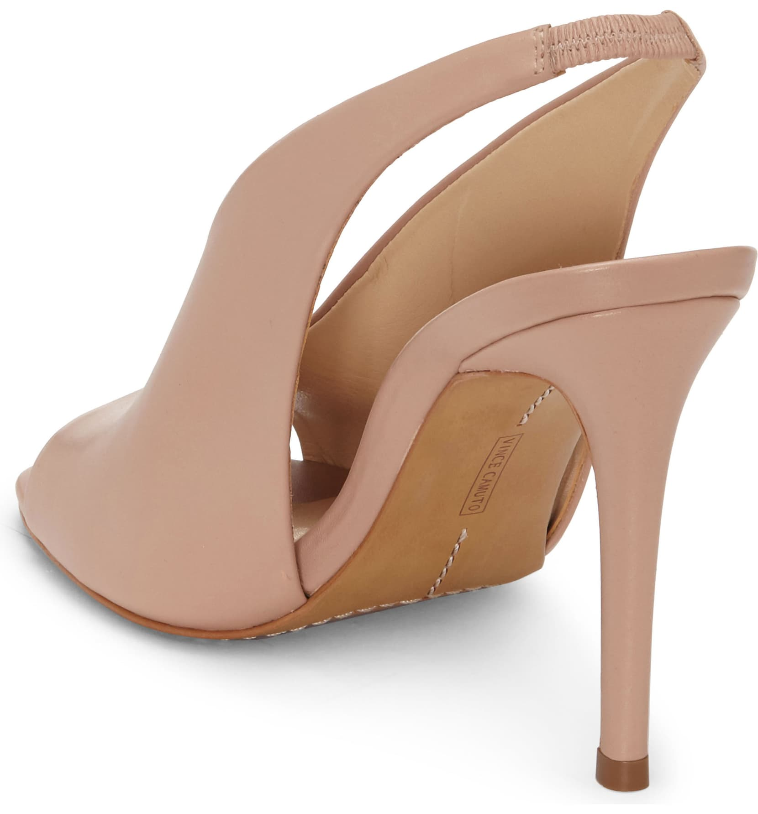
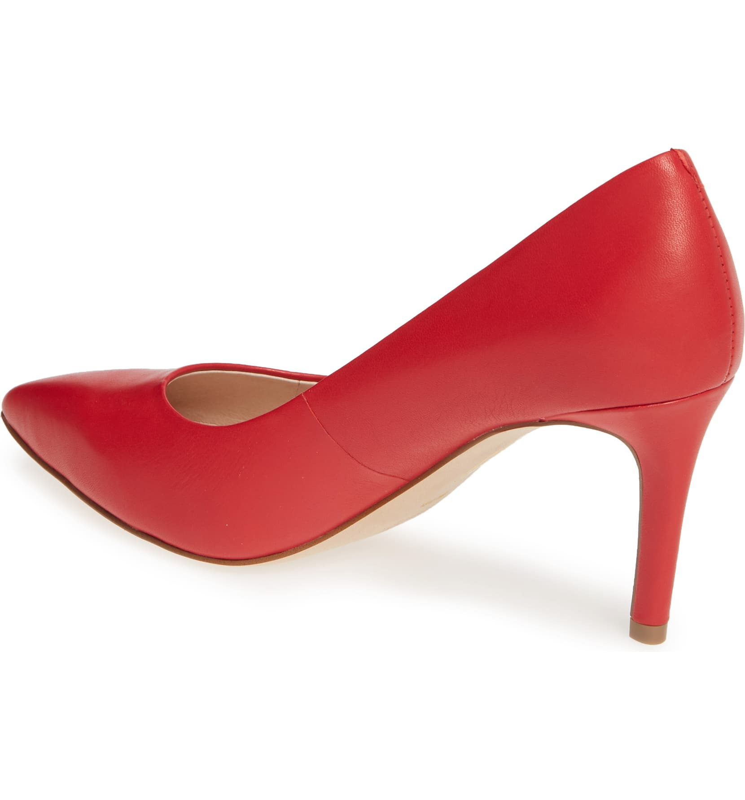
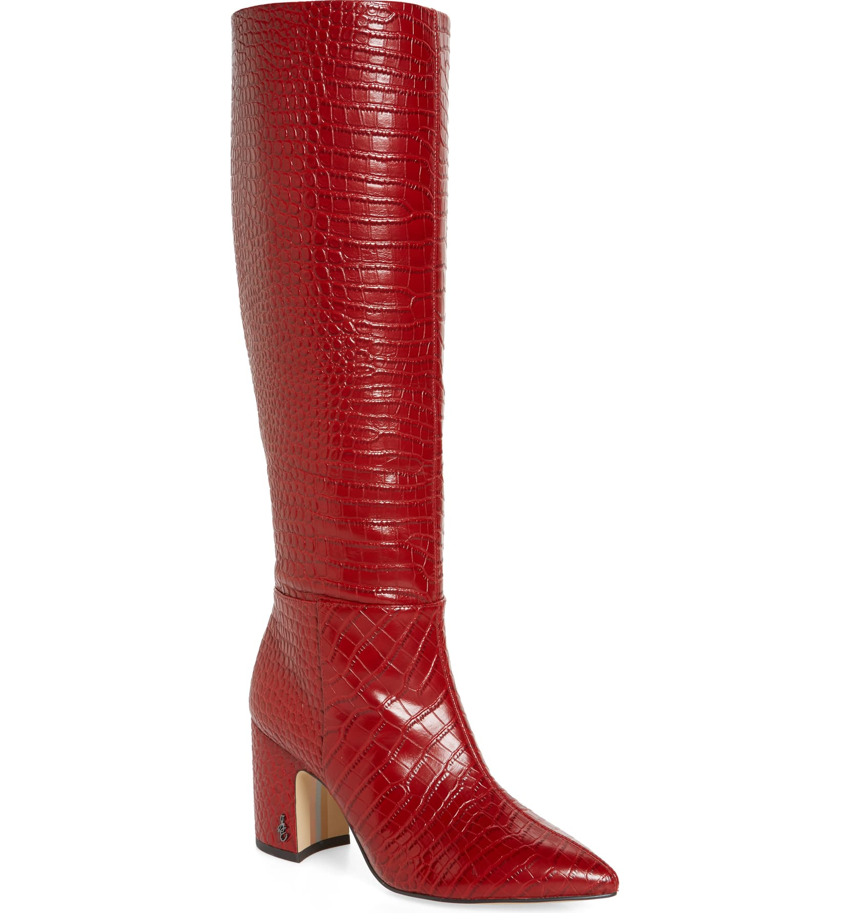
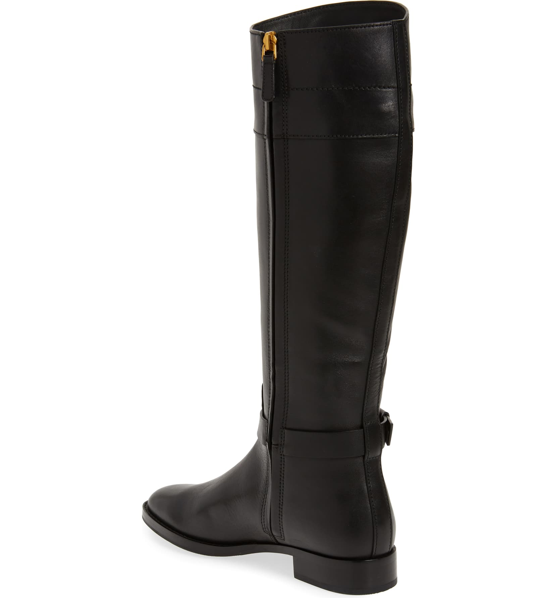
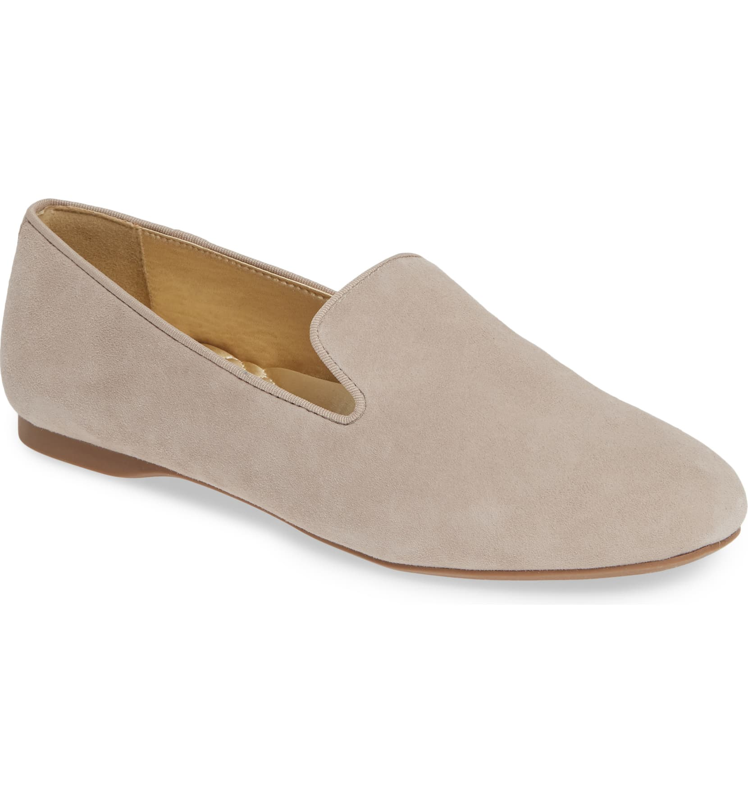
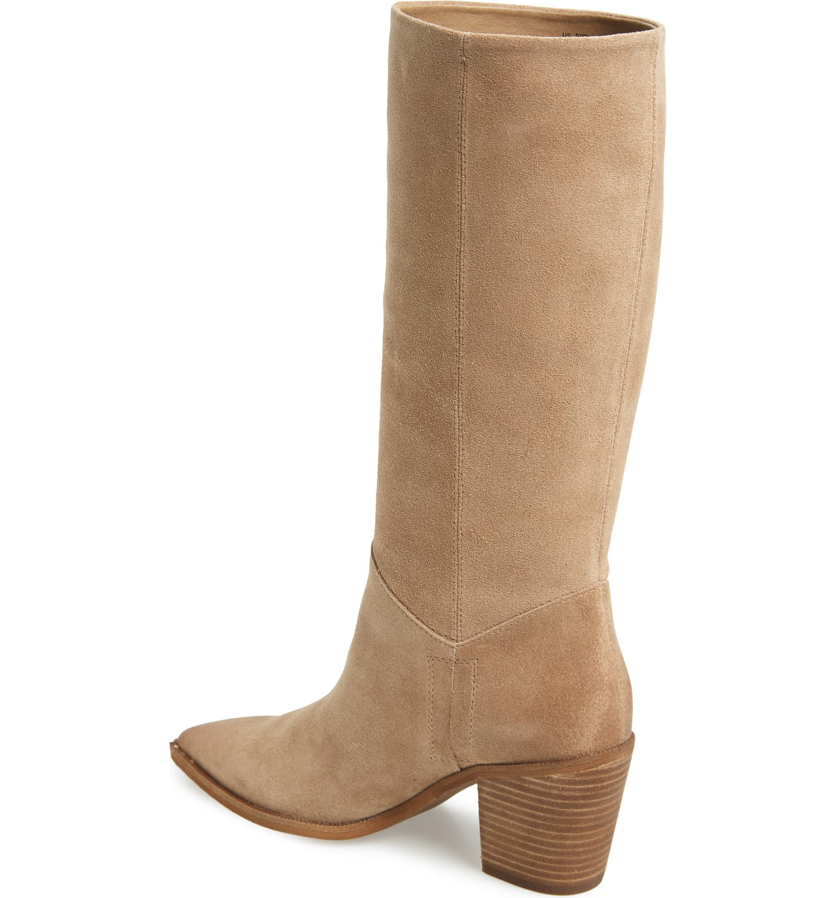
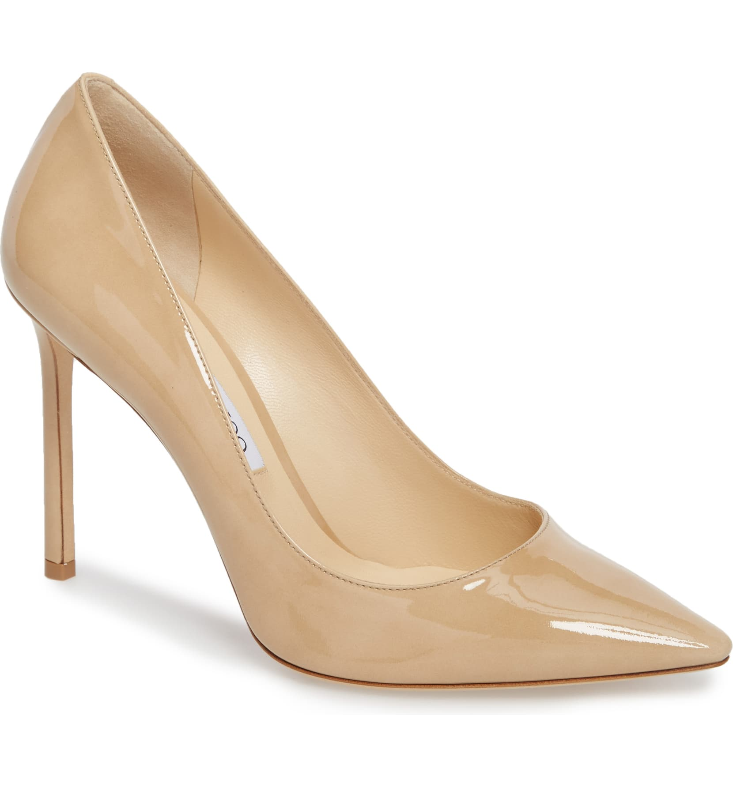

---
# Feel free to add content and custom Front Matter to this file.
# To modify the layout, see https://jekyllrb.com/docs/themes/#overriding-theme-defaults

layout: home-layout
---

<div class="site">
  <input type="checkbox" name="main-nav-toggle" id="main-nav-toggle">
  <header>
    <section class="top">
      {% include header-top.html %}
    </section>

    <section class="bottom">
      {% include navigation.html %}
      <h1>Welcome to Al's Shoe Store</h1>
    </section>
  </header>


  <div class="carousel-wrapper">
    <a href="shop.html">
      <div class="carousel">
        <div></div>
        <div></div>
        <div></div>
        <div></div>
        <div></div>
        <div></div>
        <div></div>
        <div></div>
        <div></div>
        <div></div>
        <div></div>
        <div></div>
        <div></div>
        <div></div>
        <div></div>
        <div></div>
        <div></div>
        <div></div>
        <div></div>
        <div></div>
        <div></div>
        <div></div>
        <div></div>
        <div></div>
      </div>
    </a>
  </div>

</div>

<script src="https://code.jquery.com/jquery-3.4.1.min.js"></script>
<script src="./slick/slick.js"></script>
<script>
  $(document).ready(function () {
    $('.carousel').slick({
      infinite: true,
      autoplay: true,
      arrows: false,
      speed: 2000,
      autoplaySpeed: 1500,
      cssEase: 'ease-in-out',
      slidesToShow: 14,
      slidesToScroll: 2,
      responsive: [
        {
          breakpoint: 1024,
          settings: {
            slidesToShow: 10,
            slidesToScroll: 2,
          }
        },
        {
          breakpoint: 640,
          settings: {
            slidesToShow: 8,
            slidesToScroll: 2
          }
        }
      ],
    });
  });
</script>